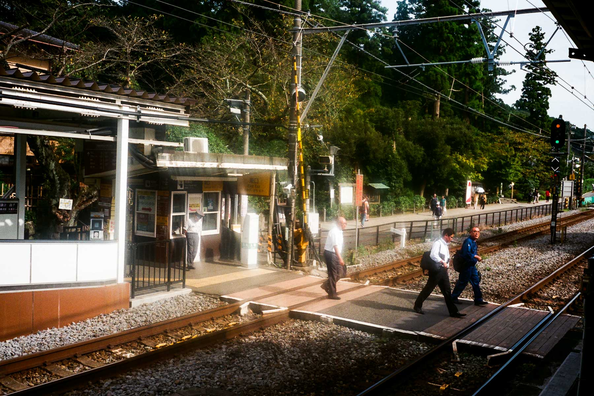

旅程的第四天，早上起床吃過早餐之後，我又穿過隧過和天橋，到達江の島，這天要到山上去看江島神社啦！
江島神社邊津宮、中津宮
行過弁天橋通往江之島，一直向上行，很快便進入了江島神社的參道，在樓梯向上看，便看見一個很大的紅色鳥居和瑞心門。
要到山上參拜江島神社，你可以行樓梯，或者俾錢乘搭電梯上山，如果沒有記錯，前後一共有三條上山的電梯。我買了一日的Day Pass，可以無限次使用上山的電梯和進入山上的江の島展望灯台，非常方便，又可以保留體力（實情是我不想行樓梯上山 XD）。
江島神社分開了三個神宮：邊津宮、中津宮和奧津宮，是供奉宗像三女神的，這裏亦是日本三大祭祀弁財天地點之一。上了第一條電梯後，便到達邊津宮，邊津宮是由鎌倉幕府第三代將軍源實朝在1206年創建的，歷史在三個神宮中最淺。
邊津宮有一個巨大的彫刻實錢箱，聽說入錢落去會發出特別的聲音，不過我沒有放錢入去啦！
邊津宮旁邊的奉安殿是供奉弁財天的，聞說江戶時代，信奉弁財天信仰的人很多，都會來到這裏參拜。
乘搭第二條上山電梯，我便到了中津宮。
從中津宮乘搭第三電梯，我到了一個比較寬闊的廣場，右面是公園和展望灯台，左面有一條小路繼續行，途中可以看到富士山。
江の島大師
在小路上一直向前行，我到了一個有趣的地方，建築感覺上有少少似香港墳場的靈灰閣，但是很細小，名叫「江の島大師」。

入去之後，原來是佛教的寺院，這裏燈光很暗，供奉不動明王。這裏的歷史只有20多年。自明治維新廢佛毀釋、神佛分離之後，江之島再沒有佛教寺院，直至1993年創立江の島大師。神佛習合和神佛分離是我一直想研究的日本歷史，可是這個無底深潭，不知何時才有心機開始鑽研了。
離開大師之後，一直向前走，到達了奧津宮。
江島神社奧津宮
來到奧津宮，鳥居旁有個展板，原來相傳這個鳥居是源賴朝捐贈，但原來的在2004年颱風破損，現在這個只是相似。
這裏有一個分岔路，可以去「龍恋の鐘」，但一聽名字便知道是情侶浪漫的景點，我一個人去不用浪漫啦！
在奧津宮逗留一會兒，我便繼續向前走，到了海邊。

江の島岩屋
沿著海邊小路一直走，我便到了江の島岩屋，這裏也可以使用1 day pass進入。這裏是一系列的岩洞，是江之島弁財天信仰的發源地，以前很僧人和武將都會來到岩屋內參拜。可是現在都搬了出來，並沒有這裏祭神。
現在這裏是讓遊人參觀的岩洞，有不同的佛像、碑文等，有一段比較黑暗的路段，會有工作人員派蠟蠋給你，好像回了古代一樣。行到最後有一條龍給遊客影相。
參觀完岩屋，也算是走了整個江之島了。時間尚早，走回頭路到了江の島展望灯台。
江の島展望灯台 (Sea Candle)
使用1 day pass上了展望灯台，這裏只有一個目的：看江之島和藤沢市的全景。
児玉神社
看完了風景，我回到了江島神社的瑞心門，看見旁邊有另一條樓梯去「児玉神社」，不過這個神社正在維修。
回到香港後上網查找，才知道這個神社是供奉曾經做過台灣總督的兒玉源太郎。社殿是用阿里山的檜木建底；「兒玉神社」的紅底金字匾額是李登輝揮毫，跟台灣淵源甚深。
江之島也行得七七八八，又到了午餐時間，草草吃過午飯之後，我乘電車到了北鎌倉駅，參觀兩座寺院。
円覚寺
北鎌倉駅旁邊就是円覚寺的入口，這裏主要供奉的是釈迦如来，在1282年由北条時宗創立，現在也有舉辦坐禪會給公眾參與，夏目漱石和島崎藤村都曾經來過參禪。這裏也有北条時宗的墓所。我很喜歡円覚寺這個地方的風景和氣氛。

東慶寺
在北鎌倉駅的另一邊是東慶寺，這個寺院是「緣切寺」，在江戶時至明治時代，想離開丈夫的女子可以到東慶寺出家，兩年後便可以正式「切緣」離婚，這個制度直至明治維新後才廢除。
鏑木清方記念美術館
去完寺院之後，我回到鎌倉駅，去到昨天看到展覽海報的鏑木清方記念美術館，鏑木清方是昭和時代的浮世繪師，美術館是他昔日故居的位置。館內現正紀念樋口一葉死後120週年，展示出樋口一葉的小說作品，如何影響到清方，從而顯現在他的作品上。
看完展覽，坐江ノ電回江之島。
江の島夜景
吃完晚飯後，我又再次上山，到了江の島展望灯台。明天要到下一個地方住宿了，今晚要慢慢享受這裏的夜景。